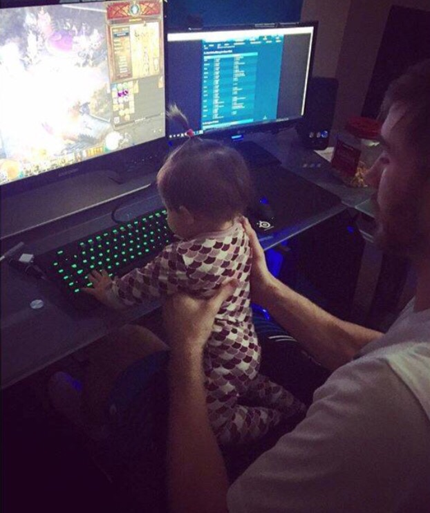
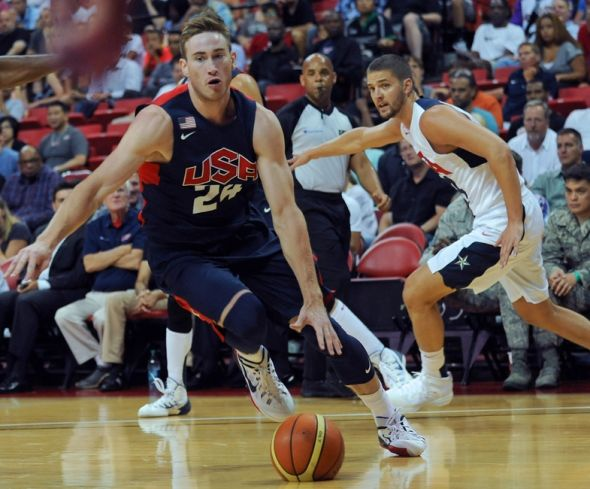
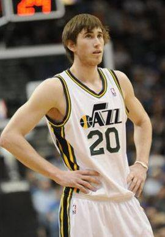
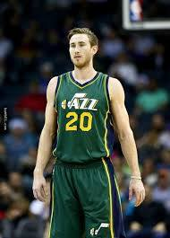
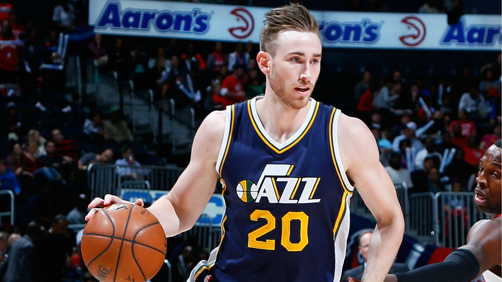

him playing computer games with his daughter
him playing in team USA
know more about him as a basketball player
Gordon Daniel Hayward (born March 23, 1990) is an American professional basketball player for the Utah Jazz of the National Basketball Association (NBA). He played college basketball at Butler University for two seasons where he led his team to a runner-up finish in the 2010 NCAA Tournament his sophomore season. He was selected by the Utah Jazz with the ninth overall pick in the 2010 NBA draft.
  
show more pictures of him hide pictures